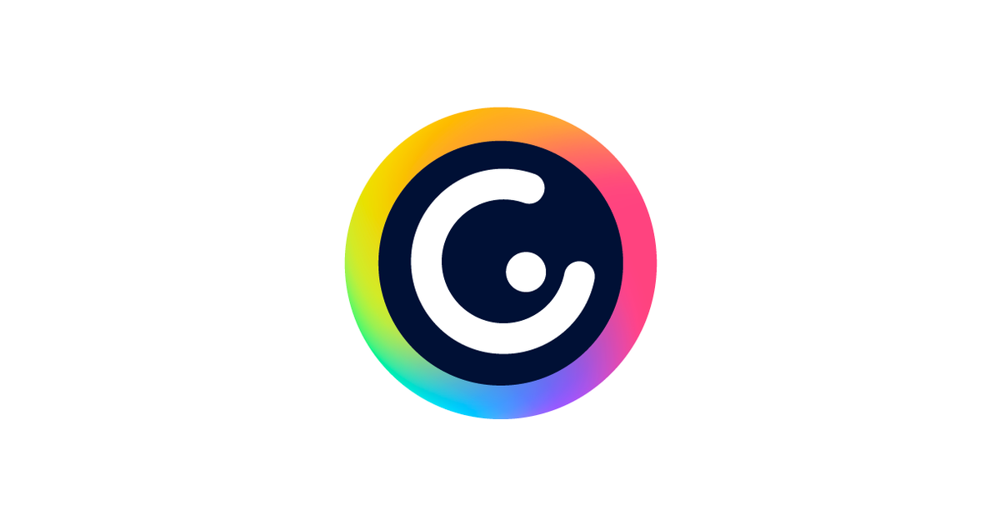

De la simulación a la realidad digital
¡Enhorabuena! Ya habéis superado los retos técnicos en el simulador. Ahora llega el momento de demostrar lo que habéis aprendido creando vuestros "productos estrella".
En esta fase, vuestro objetivo es comunicar de forma clara y creativa cómo funciona una red segura. Para ello, trabajaréis en dos proyectos complementarios:
Una Presentación de Investigación: Donde explicaréis de forma visual el viaje que realizan los datos por el mundo, los componentes físicos que lo permiten y los protocolos que hacen que Internet sea un lugar seguro.
Un Vídeo-Tutorial: Donde grabaréis vuestra pantalla para enseñar al mundo vuestras conclusiones y cómo configurar una red doméstica sin fisuras.
¿Cómo vamos a trabajar?
Seguiremos con vuestra pareja cooperativa. Recordad que no se trata solo de que "quede bonito", sino de que la información sea técnica, precisa y fácil de entender para alguien que no sepa de redes.
Instrucciones detalladas:
Haced clic en los sub apartados (5.1 y 5.2) que encontraréis en el menú de la izquierda para ver los requisitos y las herramientas que vamos a usar.
Para la Infografía:

Para el Vídeo: